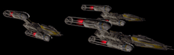
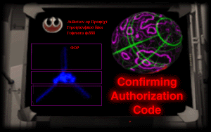

The change in velocity woke me. The pilot noticed my movement and smiled down at me. "You're awake." he greeted. "You've got pretty good timing. We're in system, but not quite there yet."
I gazed out the window. Like the pilot had indicated we were out of hyperspace, the blue blur replaced by a black void dotted with white stars. A brown-colored planet and it's moon were slowly coming into focus straight ahead.
As I sat there staring, three Y-wings banked into view. The pilot altered course to meet them. "Looks like they've sent out a welcome party for us."
The panel buzzed. "This is Gold Leader. Please give your identification and state your business in this sector."
The pilot leaned toward the mike. "This is Captain Aran of the New Republic Shuttle Katarn. I'm bringing in a new shipment for inspection."
"Acknowledged. Transmit you authorization code now."
"Transmission commencing." He flashed me another grin as he started the upload. "Didn't I tell you security was high?"
A screen in the panel displayed a replica of what was running through the Y-Wing pilot's computer right now. Technical data, encrypted messages and other information flashed before my eyes, rushing by too fast for me to pick out anything specific. It completed quickly, and the symbol of the New Republic stared out at me.
The Y-Wing pilot spoke again. "Shuttle Katarn, you are clear to proceed. We'll escort you in."
"Our thanks, Gold Leader."
With the Y-Wings flying ahead in formation, we continued on toward the planet.